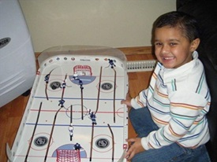

About Me: Vrij Sheth
Hi, my name is Vrij Sheth. I am currently attending Mount Royal Unvieristy, taking a degree in Computer Information Systems. I was born and raised in Calgary. I come from a family of four, both of parents were born in India, My Dad was raised in Calgary, while my Mom was rasied in India. I have one brother who was also born and raised in Calgary.


A Little Introduction
2004-2006
Back Then, I dont remeber alot about. All my parents would tell me is that I was afraid of people, and I liked watching Tom And Jerry and I loved watching Hockey.
2007-2013
These years, were when I started Kindergarten in 2007 until 2010, then I went to North Haven School for K-6. With me finding new sports to play soccer, but contining my passion for ice hockey and starting that.

2014-2018
These were my years in junior high, where I was learning who I was, and what I wanted to be in the future. I also unfortunately had to give my dreams in Ice Hockey, because of concussions. But still continued playing hockey in a ball hockey league.
2019-Now
This year of 2019 I started high school at John G Diefenbaker High School, where I did graduate from, and then came to MRU for my degree. I knew in this time that I wanted to work in tech field. Also I got my first two jobs in these years and subway and Best Buy, where I still currently work.